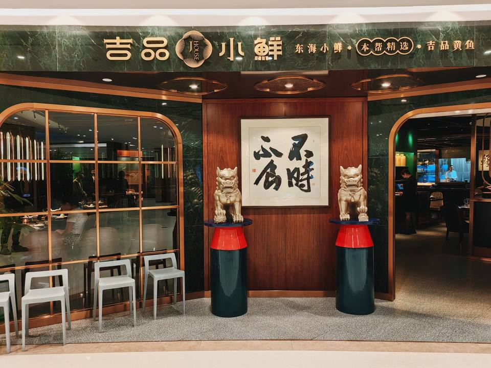
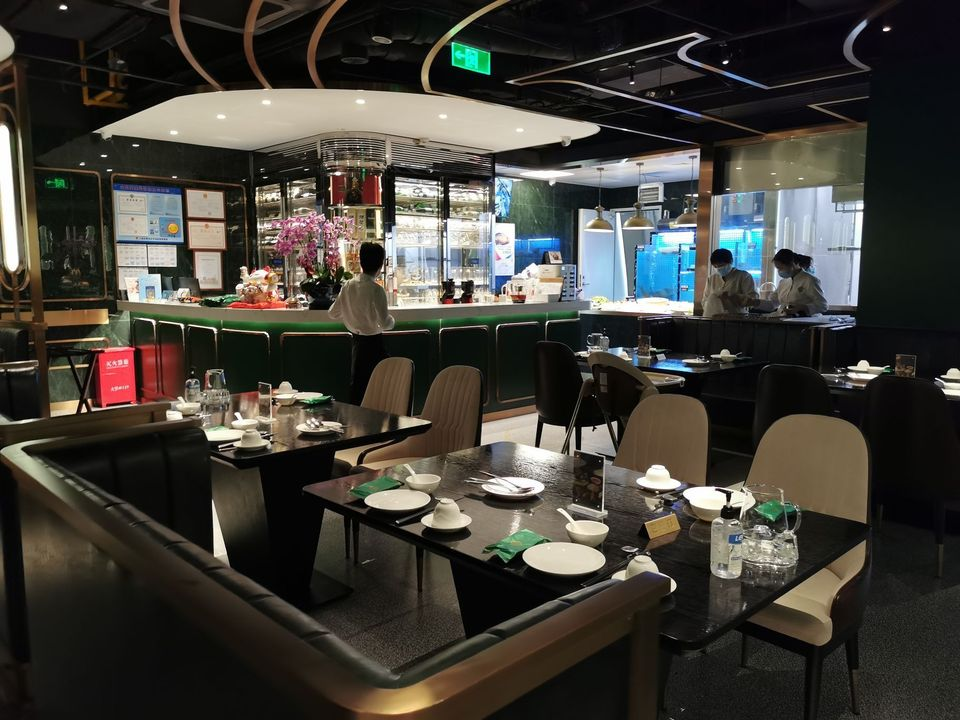
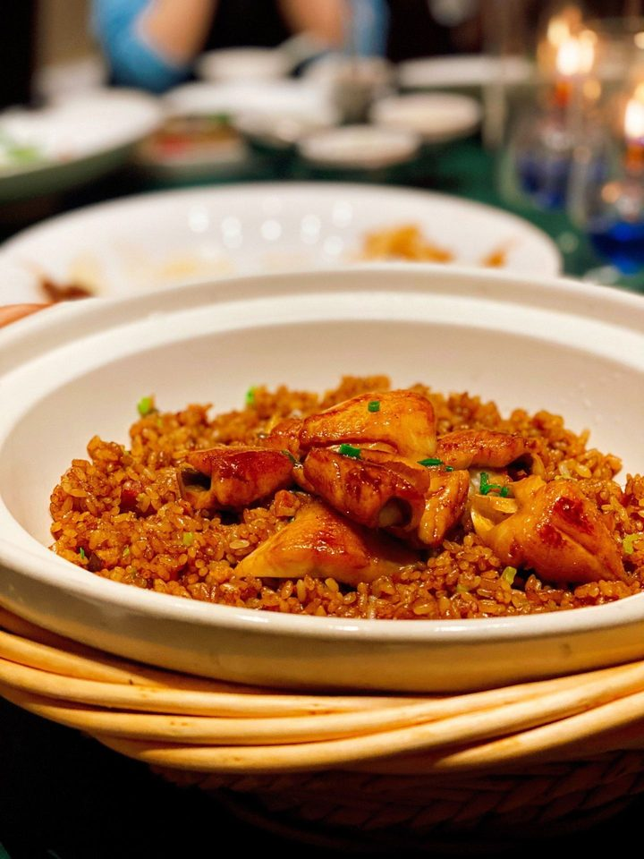
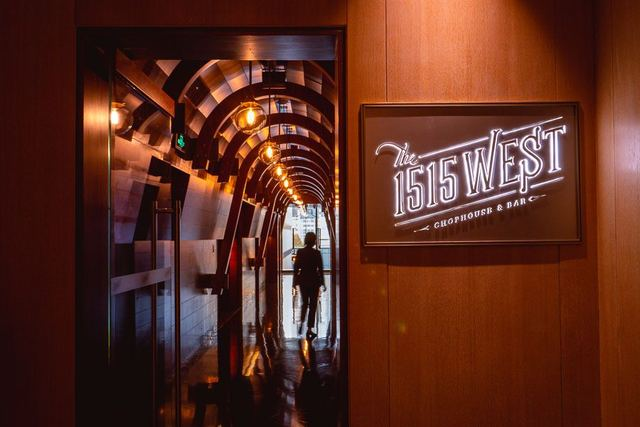

Jhouse (Jing'an) 吉品小鲜 Jhouse (静安店)
Shanghainese seafood · Jing’an
CheckedRatings and hours read · 11 Nov 2026




Go for the roe-rich crab marinated in Shaoxing rice wine, or the yellow croaker.
Good to know
A Shanghai-style seafood restaurant specializing in yellow croaker, wine-marinated crab and seasonal dishes.
What to order
Roe-rich crab marinated in Shaoxing rice wine 绍酒醉膏蟹
What was checked, and what was not
Read on 11 Nov 2026
Dianping 4.8 from 12,459 reviews, read on 11 Nov 2026. Amap 4.6 from 107 reviews, read on 11 Nov 2026. Second source: Amap. Exact branch, 1788广场 2F (静安店, unit 204), 南京西路1818号. Amap's own users, independent of Dianping. Ctrip's 4.3 from 7 reviews is too few to count. Must-Eat List 4 yrs running.
Not checked
No closure was found, which is not proof that the place is open, so check before you go. Hours, prices and availability were not confirmed with the venue.
Sources
Nearby
